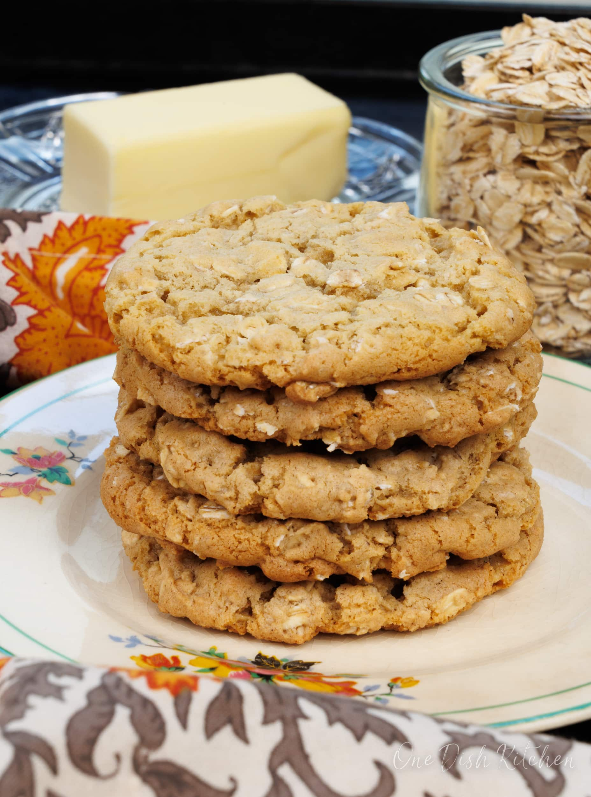

Oatmeal Cookies

Source
Description
This is the best oatmeal cookies recipe! This small batch of soft oatmeal cookies are ones
you'll want to keep in your cookie jar. Filled with plenty of oats, these cookies are buttery and crisp around
the edges and soft and chewy in the centers. Better than Grandma's!
Ingredients
- 3 tablespoons salted butter, melted
- 4 tablespoons brown sugar, packed
- 2 tablespoons granulated sugar
- 1 large egg yolk
- ¼ teaspoon vanilla extract
- ⅓ cup all purpose flour
- ¼ teaspoon baking soda
- ¼ teaspoon ground cinnamon
- ⅛ teaspoon salt
- ½ cup old fashioned oats
Steps
- Heat oven to 325 degrees F (165 degrees C). Line cookie sheet with parchment paper or a Silpat liner.
- In a medium-sized bowl, mix together the melted butter, brown sugar, and granulated sugar until well blended.
- Beat in the egg yolk and the vanilla extract until creamy. Set the bowl aside.
- In a separate small bowl, mix together the flour, baking soda, cinnamon, and salt.
- Mix the flour mixture into the butter mixture until well blended. Stir in the oats.
- Use a medium-sized cookie scoop or 1 large tablespoon to scoop out the cookie dough.
Place cookies 2-inches apart on the cookie sheet. Bake for 8 to 10 minutes.
- Let the cookies cool for 5 minutes on a cookie sheet then transfer them to a cooling rack to finish cooling.